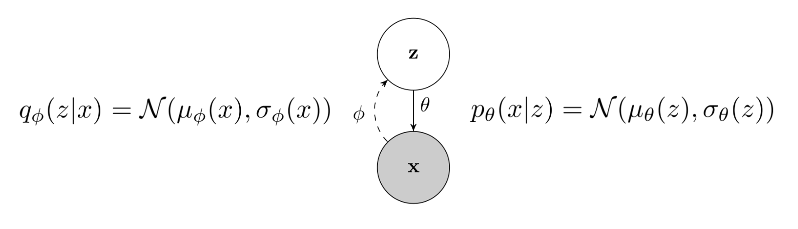

Variational Autoencoder#
VAE (Variational Autoencoder)是一种很吊打的生成式模型。这本应属于DL的内容，也可以在我一开始推荐的笔记里找到一个非常优秀、系统的讲解。因此，这里我们只是给这一模型做一简介。
Latent Variable Model#
我们先从latent variable model的概念开始：latent variable model就是指，为了输出 \(p(x)\) ，我们给出
这里 \(z\) 的维度通常比较小，称为latent variable。 \(p_{}(x|z)\) 是模型主要学习的东西，即通过latent variable \(z\) 生成 \(x\) ；而 \(p(z)\) 是某种prior，有两种选择。
- 一种是直接给定一个先验分布，比如高斯分布；
- 另外一种则是让模型也可以改变 \(p(z)\) ，但 \(z\) 的维度比较小，因此可以再用另外一个生成模型来单独学习 \(p(z)\) 。
两种选择都有实际中的应用。在这里，VAE选择了前者。
MLE training and ELBO#
我们下一步需要考虑的就是，如何进行MLE training，也就是计算
如果你已经~被RL洗脑熟悉了RL的思想的话，你可能会想到直接从高斯分布采样出一个~若干个 \(z\) ，然后估计 \(\log p(x)\) 。这样理论上并不是不行，但是可能需要很多很多的样本才能使得训练有效（后面我们会进一步阐述这一点），因此在实际上很少用这样的方法。
这里，VAE的思想就十分巧妙：我们采用一种类似importance sampling的方法。对于每一个 \(x\) ，我们设计一个分布 \(q_{x}(z)\) （比如，就是高斯分布）。这样，就有了
这种通过放缩来估计 \(\log p(x)\) 的方法，被称为Variational Inference。注意到，右边是 \(\log p(x)\) 的一个lower bound，并且 \(q_x(z)\) 和 \(p(z)\) 越接近，这一lower bound越接近我们原来的目标（也就是 \(\log p(x)\) ）。因此，我们也把它叫做ELBO（Evidence Lower Bound Objective）。
我们转而来优化ELBO！首先注意到它和 \(\log p(x)\) 原来的表达式不同，可以直接计算。这是因为
而右边的第一项可以通过采样估计，第二项则是高斯分布的KL divergence，具有闭形式。因此，我们可以通过梯度下降来优化ELBO。
其次，ELBO还有另外一种变形方式，这一种方式告诉我们ELBO和真正的log prob的距离：
因此，我们知道了：假设我们能够让 \(p(z|x)\) 和 \(q_x(z)\) 完全接近，那么 \(\log p(x)\) 和ELBO的差距就是0，也就是说，我们的ELBO就是真正的log prob。
Reframing VAE as a Stochastic AutoEncoder#
上面的一系列推导过于突然，可能会产生许多问题。因此，我们需要先给上面的数学公式一些解释。
Q: 等等，我觉得你在骗人啊！你刚才说，ELBO的第一种表达式里面的第一项，也就是 \(\mathbb{E}_{z\sim q_{x}(z)}\left[\log p_{}(x|z)\right]\) ，可以通过采样计算。但如果这样的话，为什么我们不直接采样计算 \(\mathbb{E}_{z\sim p(z)}\left[\log p_{}(x|z)\right]\) 呢？这两者有任何差别吗？？
A: 你先别急。还记得我们一开始说的吗，理论上采样计算 \(\mathbb{E}_{z\sim p(z)}\left[\log p_{}(x|z)\right]\) 也是可以的，只不过可能需要很多很多的样本。至于为什么采样计算 \(\mathbb{E}_{z\sim q_{x}(z)}\left[\log p_{}(x|z)\right]\) 需要的样本数远少于前者的样本数，就需要我们来从这些公式的意义上阐述了。所以，先听我说——
What is a VAE, Anyway?#
我们先看看，什么是 \(x\) 和 \(z\) ？ \(x\) 很简单，就是输入的图片，其分布是我们的模型想要学习的；而 \(z\) 则略抽象，我们说它是latent variable；一般来说，实践上， \(z\) 的维度会比 \(x\) 小很多。因此，可以把 \(z\) 看作 \(x\) 的一种"压缩"。
那 \(p(x|z)\) 和 \(q_x(z)\) 这两个主要的分布又是干什么的呢？我们好像突然发现一些玄机：如果把 \(x\) 和 \(z\) 的对应关系比作文件和压缩文件的关系，那么 \(p(x|z)\) 完成的工作就是解压缩，只不过因为 \(z\) 毕竟损失了信息，所以解压缩出来的是一个分布。我们再来看 \(q_x(z)\) ，它本来没有任何意义，只不过是我们选来做importance sampling的一个分布；但我们前面看到，作为最后的目标，我们会希望 \(p(z|x)\) 和 \(q_x(z)\) 完全接近。因此，理论上，我们会希望 \(q_x(z)\) 类似一个从 \(x\) 到 \(z\) 的“压缩”过程。同样，这一压缩也给出一个分布（之后我们会讨论这一点）。
其实，这种思想在ML中很早就有，被称作AutoEncoder（AE）。AutoEncoder这一名字虽然听起来很高级（“自编码器”），但实际上就是我们前面所说的压缩-解压缩系统。完成压缩过程的网络叫做Encoder，而完成解压过程的网络叫做Decoder。这样，对号入座，我们就可以引入两个网络：Encoder \(p_{\theta}(x|z)\) ，和Decoder \(q_{\phi}(z|x)\) 。
Q: 等等，为什么 \(q_{x}(z)\) 变成了 \(q_{\phi}(z|x)\) 这个条件分布？
A: 对的——你是不是觉得，应该对每一个 \(x\) 训练一个分布 \(q_{x}(z)\) ？理论上也不是不可以，但这样的开销太大了，因此不如把 \(x\) 直接当作神经网络的输入。这种方法很常见，叫做Amortized Variational Inference。
此时，我们就可以大致地想像VAE的全局：对于每一个图片 \(x\) ， \(q_{\phi}(z|x)\) 把它压缩到 \(z\) 所处的空间（叫做latent space）里的一片区域。虽然这片区域对于人类来看是一堆乱码，但对于decoder \(p_{\theta}(x|z)\) 来说，它十分有意义，因此decoder可以完成解压，把 \(z\) 再还原回 \(x\) 。

至此，我们也终于可以解释一开始挖的坑了：为什么采样计算 \(\mathbb{E}_{z\sim q_{x}(z)}\left[\log p_{}(x|z)\right]\) 来训练，这样需要的样本数远少于用 \(\mathbb{E}_{z\sim p(z)}\left[\log p_{}(x|z)\right]\) 训练需要的样本数？道理实际上很简单——如果 \(z\) 从 \(p(z)\) 取样，那就是东一榔头西一棒子。而我们的目标是希望对于所有这样的高度随机的 \(z\) 给出 \(p(x|z)\) 都要比较大，虽然不是不行，但对模型的要求就很高；不仅如此，训练的时候梯度也是东踹一脚西踹一脚，很难稳定。
但用 \(q_{x}(z)\) 的话，就完全不同了。因为我们的模型（参数 \(\phi\) ）也在学习 \(q_x(z)\) ，因此它完全可以给出一种structure：比如，对于MNIST的数字生成，模型可能学会把latent space劈10份。如果我看出来你这个数字是8，那就把你扔到第8个区域里。它还可以学会再细分，比如我看出来你这个数字风格潇洒飘逸，就分到这个区域上面；如果稳重隽秀，那就分到下面。而decoder经过训练，也就知道了这些“暗号”，比如它拿到latent space里面第8个区域中上面部分的 \(z\) ，就知道这是一个潇洒飘逸的8，这样就有了信息，生成起来也就更加容易了。
（这段说的实际上不够准确，实际上模型做的肯定会比这个更复杂，因为 \(q_{x}(z)\) 在训练过程中被限制的必须和高斯分布接近。但模型还是能建立起来一些结构的，只不过肯定不是这样human-readable的了。）
ELBO Revisited#
我们最后再来看我们前面数学上得到的ELBO。它现在已经变得十分有意义了。
前面我们给出了ELBO的两种表达式。它们分别是：
第二个表达式还是之前那个意思：为了优化算不出来的 \(\log p(x)\) ，我们先优化（最大化）ELBO。如果最后 \(q_{\phi}(z|x)\) 所幸能和 \(p(z|x)\) 很接近，那么我们就完成了目标。
而第一个表达式更加有趣了（注意训练的时候我们使用的是这个第一个表达式）。对于第一项，我们发现它的意思是：对于一个 \(x\) ，我们压缩到latent space成为一个分布，再解压缩回去得到 \(x\) 的分布，此时原始图片的概率比较大。也就是说，经过压缩-解压缩过程，很大概率我们保证图片不变。因此，这也叫做Reconstruction Loss。
第二项是什么意思呢？这就是VAE和AE的不同之处了。如果我们的目的只是做一个AE，那么有第一项就足够了。这是因为，AE的目标只是learn a representation，因此数据集里面对应的 \(z\) 可以任意复杂。但是，VAE需要我们生成图片，而生成的时候我们没有 \(x\) ！（我们不能再从 \(q_{\phi}(z|x)\) 中采样了！）
因此，对于VAE，生成模型的本性使得它必须控制 \(z\) 的分布，使得我们最后可以从这一分布中采样。因此，第二项的意思实际上是，我们控制 \(q_{\phi}(z|x)\) 必须是标准高斯分布，这样我们训练好的模型才能真正“投入生产”，生成图片。（设想我们不把第二项加入训练目标，那么loss依然可以降的很小，但是生成出来的图片就会是一坨答辩。）这一项也因此称为KL Penalty。
同时，这也解释了为什么我们之前说 \(q_{\phi}(z|x)\) 和 \(p_{\theta}(x|z)\) 必须是分布，而不能是一个确定的值。后者当然是因为我们要做MLE training，不得不给一个概率分布；而前者恰恰就是因为我们希望 \(z\) 的分布是一个标准高斯分布，而把 \(q(z|x)\) 设置成分布有利于对每一个 \(x\) 分别进行训练。
因此，ELBO这一数学上的整体实际上是一个优秀的设计：它把AE的基本思想和生成模型的必然需要结合起来，最终创造出VAE这一强大的模型。
Q: 等等，你刚才说，“如果最后 \(q_{\phi}(z|x)\) 所幸能和 \(p(z|x)\) 很接近，那么我们就完成了目标”，这真的能实现吗？
A: 当然。如果理想情况下 \(q_{\phi}(z|x)=p(z)\) ，和 \(x\) 都没关系了，那肯定满足 \(q_{\phi}(z|x)=p(z|x)\) 。虽然实际上这样的境界不能被达到，但是至少你可以想像，ELBO的两个表达式中的两个KL divergence的训练方向是一致的。
Conclusion#
VAE的基本思想就介绍完了。如果这是你第一次接受，那么确实可能还有很多地方没有想清楚。但当你逐渐习惯了它的思想之后，你会发现这一切都十分自然。愿你能充分体会到它的美。
接下来，我们略提一些实现VAE的技巧，因为它们的思想往往能应用到很多其他地方。
Tricks#
Design models for VAE#
一个conventional的设计是
这里为什么第二个分布的方差选为1,还是有点说法：就如我们之前所说， \(p_{\theta}(x|z)\) 本来没有必要是随机的，只是因为我们优化的目标是 \(\log p(x)\) ，因此确定的分布会使得loss成为inf。因此，这里的方差没有实际的意义。
也正是因为如此，写VAE一个很容易犯的错误是， 在生成的时候仍然从 \(p_{\theta}(x|z)\) 采样 。如果你使用的是MNIST的数据，那么你相当于为每个分量不超过1的图片加了一个方差为1的噪声！正确的方法是，虽然我们训练的时候搞这一个“概率分布”，实际上我们清楚这个概率分布只是一个工具，因此我们应该直接用 \(\mu_\theta(z)\) 作为生成的图片。
也有人因此指出，这个1没什么特殊之处，可以换成其他的值。这就是著名的 \(\beta\) -VAE。当然，第一次尝试的时候，还是建议使用1.
Reparameterization Trick#
有一个不易注意到的细节，就是我们ELBO中的第一项
同时包含了两个模型 \(\phi\) 和 \(\theta\) ！虽然计算可以直接通过采样，但这样就丢失了对 \(\phi\) 的梯度。（这好比训练autoencoder的时候只训练decoder！）因此，我们希望想办法计算这个期望的梯度。
当然，你也许早就知道，torch.distributions 的成员都可以rsample，并且得知这样得到的sample是可以反向传播的。而它的原理就是我们所说的reparameterization trick。对于高斯分布，这一方法实际上就是：
其中 \(\Sigma_\phi(x)=\exp(\text{diag}(\sigma_\phi(x)))\) ，而*代表分量积。这样，我们发现 \(\phi\) 就从下面转移到了上面，因此我们可以直接计算这个期望的梯度。
值得一提的是，我们在第五讲一开始介绍policy gradient的时候，也遇到了完全一样的问题：需要优化的东西在期望符号底下。但当时我们通过数学上的一通变换解决了这一问题，当时的那一方法被称为REINFORCE。实际上，面对这种问题，REINFORCE和REPARAMETERIZE实际上是最常见的两类方法。如果非要分出高低，那么REPARAMETERIZE还是更加常用，因为经验上它具有更小的variance。
VAE in RL#
最后，简单提一些VAE在RL中的应用。
- representation learning：我们在训练模型打游戏的时候，如果直接把pixel作为state，就会有很多问题（维度大，很多不同的图片实际上对应着类似的信息，等等）。因此，我们可以用VAE先把图片压缩到 \(z\) ，再在 \(z\) 上训练RL agent。
- imitation learning：我们之前在imitation learning的过程中，提到不同的expert在面对state的时候可能作出不同的action（比如，前面是一棵树，滑雪运动员可能向左或者向右绕过）。这可能会给普通的概率模型 \(\pi_{\theta}(a|s)\) 一些挑战，但VAE不会被多峰的分布难倒。因此，使用VAE做imitation learning是一个不错的选择。
Reference Papers#
- Embed to Control: A Locally Linear Latent Dynamics Model for Control from Raw Images（state-space model）
- SOLAR: Deep Structured Representations for Model-Based Reinforcement Learning（state-space model）
- Learning Latent Dynamics for Planning from Pixels（state-space model）
- Stochastic Latent Actor-Critic: Deep Reinforcement Learning with a Latent Variable Model（state-space model）
- Dream to Control: Learning Behaviors by Latent Imagination（state-space model）
Created: 2024年10月29日 20:50:57